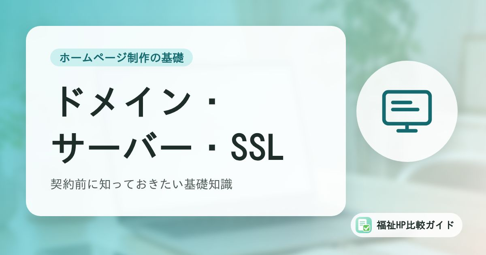

ドメイン・サーバー・SSLの基礎知識｜福祉事業所が契約前に知っておきたいこと

制作会社と打ち合わせをすると、「ドメインはどうしますか」「サーバーはこちらで用意しますか」と聞かれることがあります。専門用語に聞こえますが、仕組みは住所や土地にたとえると理解しやすくなります。
この記事でわかること
- ドメイン・サーバー・SSLの役割を「住所・土地・鍵」で理解する
- 費用の目安と、契約時に確認すべきこと
- 名義と更新切れのトラブルを防ぐ方法
- 独自ドメインのメールアドレスを使うメリット
3つの役割を「住所・土地・鍵」で理解する
| 用語 | たとえ | 役割 |
|---|---|---|
| ドメイン | 住所 | ホームページの場所を示す名前（例：example-fukushi.jp） |
| サーバー | 土地・建物 | ホームページのデータ（文章・画像・プログラム）を置いておく場所 |
| SSL | 鍵 | 閲覧者とサーバーの間の通信を暗号化し、盗み見や改ざんを防ぐ仕組み |
ホームページを公開するには、データを置く「サーバー」と、その場所を示す「ドメイン」が必要です。さらに、問い合わせフォームなどで個人情報をやりとりするために、通信を守る「SSL」を設定します。
ドメイン：事業所の「ネット上の住所」
ドメインの種類
| ドメインの例 | 特徴 |
|---|---|
| .jp | 日本に住所がある個人・団体が登録できる。国内向けであることが伝わりやすい |
| .or.jp | 社会福祉法人、NPO法人などの非営利法人が1組織1つ登録できる。信頼性が高い |
| .co.jp | 日本で登記している会社（株式会社・合同会社など）が1組織1つ登録できる |
| .com / .net | 世界中で使われる一般的なドメイン |
費用は種類や管理会社によって異なり、年間1,000円程度から数千円程度が一般的です（.or.jpや.co.jpはやや高めです）。
ドメインで注意したいこと
- 名義は事業所（法人）にする：制作会社や職員個人の名義になっていると、契約終了や退職時にトラブルになることがある
- 更新切れに注意する：ドメインは1年ごとなどの更新制。更新を忘れるとホームページもメールも使えなくなり、第三者に取得されるおそれもある
- 自動更新とクレジットカードの期限を確認する：カードの有効期限切れで自動更新が失敗するケースが多い
期限切れドメインの悪用
更新されずに手放されたドメインを第三者が取得し、無関係なサイトや不審なサイトを表示するケースがあります。名刺やパンフレット、他のサイトからのリンクを見た人がそのサイトを訪れてしまうため、事業所の信用にかかわります。使わなくなったドメインも、しばらくは保持しておくのが安全です。
サーバー：ホームページのデータを置く場所
福祉事業所のホームページでは、月額数百円〜数千円程度のレンタルサーバーを使うのが一般的です。ホームページ作成ツール（Wix、Jimdoなど）を使う場合は、サーバーがサービスに含まれています。
サーバー選びで確認したいこと
- 無料SSLが使えるか：多くのレンタルサーバーで標準提供されている
- 自動バックアップがあるか：保存期間と、復元の方法・費用
- WAF（ウェブアプリケーションファイアウォール）があるか：攻撃を防ぐ機能
- PHPなどのバージョンを選べるか：WordPressを使う場合は重要
- サポート体制：電話サポートの有無、受付時間
- メール機能：独自ドメインのメールアドレスを作れるか、容量は十分か
SSL：通信を守る「鍵」
SSL（正確にはTLS）を設定すると、ホームページのアドレスが「http://」から「https://」に変わり、ブラウザに鍵のマークが表示されます。
- 問い合わせフォームに入力された内容が、通信の途中で盗み見られるのを防ぐ
- SSL化されていないページは、ブラウザに「保護されていない通信」と表示される
- Googleは、httpsを検索順位を決める要素のひとつとして扱っている
現在は、サイトのすべてのページをhttpsにする「常時SSL」が当たり前になっています。多くのレンタルサーバーでは無料のSSL証明書を簡単に設定できます。
独自ドメインのメールアドレスを使おう
ドメインを取得すると、「info@example-fukushi.jp」のような独自ドメインのメールアドレスを作れます。
- 無料のメールアドレスに比べて、事業所の正式な連絡先として信頼されやすい
- 担当者が変わっても、同じアドレスを引き継げる
- 職員ごと・用途ごとにアドレスを分けて管理できる
メールのなりすまし対策も
独自ドメインのメールを使う場合は、なりすましメール対策の設定（SPF、DKIM、DMARC）を行っておくと、送ったメールが迷惑メールと判定されにくくなり、事業所を装った詐欺メールも防ぎやすくなります。サーバー会社や制作会社に設定状況を確認しましょう。
制作会社との役割分担を決めておく
ドメイン・サーバー・SSLの管理を誰が行うかは、契約前に決めておきましょう。
| 項目 | 確認すること |
|---|---|
| ドメインの契約者・名義 | 事業所名義か、制作会社の代行取得か |
| ドメインの更新手続き・費用の支払い | 誰が行い、いつ更新するか |
| サーバーの契約者 | 事業所が直接契約か、制作会社のサーバーを利用か |
| SSLの設定・更新 | 自動更新されるか |
| ログイン情報の管理 | 事業所側でも把握しているか |
| 解約時の扱い | ドメイン・データを移管できるか |
まとめ
ドメインは「住所」、サーバーは「土地・建物」、SSLは「鍵」にたとえられます。いずれもホームページの運営に欠かせないもので、名義や更新、管理の担当があいまいだとトラブルの原因になります。
契約前に、ドメインとサーバーの名義を事業所にできるか、更新は誰が行うか、常時SSLに対応しているかを確認しておきましょう。費用の全体像は「ホームページ制作費用の相場」で解説しています。
よくある質問
「.jp」と「.com」はどちらがよいですか？
どちらでもホームページの機能に違いはありません。「.jp」は日本国内向けのサイトであることが伝わりやすく、「.or.jp」は法人格を持つ非営利団体（社会福祉法人やNPO法人など）が1組織1つまで登録できるドメインです。覚えやすさ、事業所名との一致、費用などで選びましょう。
今のホームページのドメインの名義を確認する方法はありますか？
ドメインの登録情報は「WHOIS」と呼ばれる仕組みで調べられる場合がありますが、代行業者の情報が表示されることも多くあります。確実なのは、制作会社やドメインの管理会社に、登録者（名義人）と管理画面へのログイン情報を確認することです。
サーバーの引っ越しは難しいですか？
WordPressなどのデータを移し、ドメインの設定を切り替える作業が必要です。手順を誤るとホームページやメールが一時的に使えなくなることがあるため、制作会社や移転代行サービスに依頼するのが安心です。多くのレンタルサーバー会社が移転の支援機能を用意しています。
参考資料・出典
制度・料金・統計は改定される場合があります。最新の内容は各出典の公式情報でご確認ください。